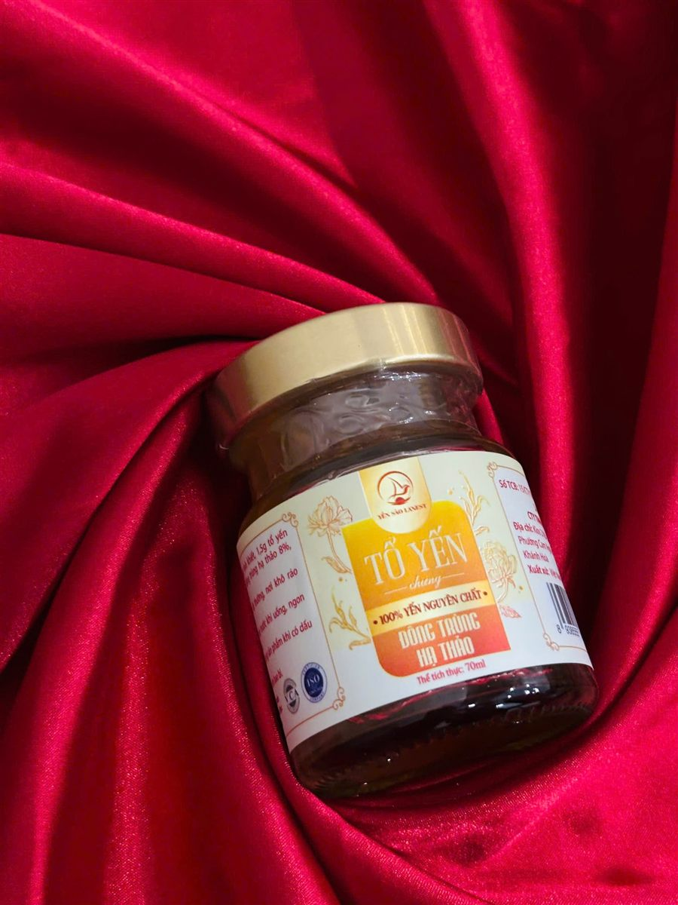
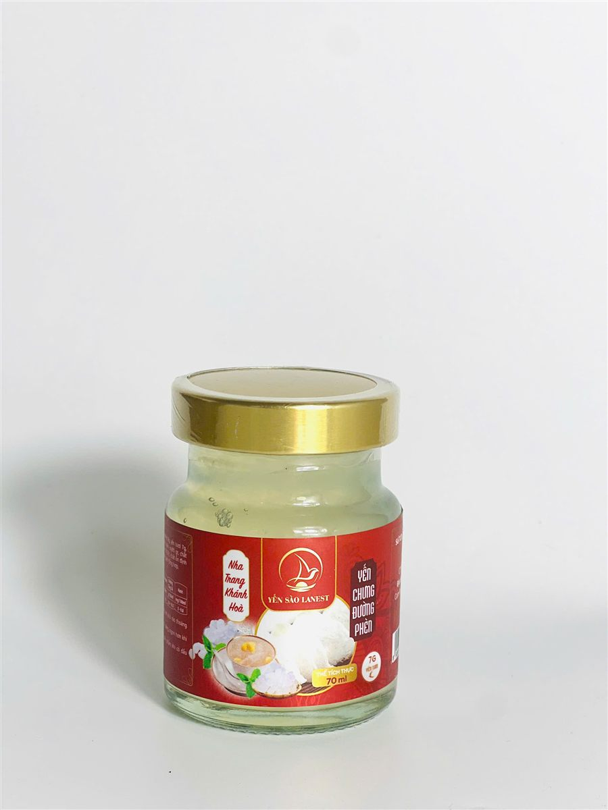

Yến Hũ Nguyên Chất 100% Và Yến Hũ 7g Yến Tươi Khác Nhau Thế Nào, Chọn Loại Nào?
Yến Sào Lanest · Đăng ngày 24/10/2026

Lanest có hai dòng yến hũ chưng sẵn, cùng hũ thủy tinh 70ml, cùng mở nắp là dùng được, nhưng bên trong khác nhau khá nhiều. Khách hay hỏi: yến hũ nguyên chất khác yến hũ 7g ở đâu, có đáng chọn không? Bài này đặt hai dòng cạnh nhau, chỉ dựa trên đúng những gì in trên nhãn và hồ sơ công bố, để anh chị tự chọn cho đúng nhu cầu.
Tổ Yến Chưng Đông Trùng Hạ Thảo Nguyên Chất 100%, hũ 70ml
1. Khác nhau lớn nhất: lượng yến trong mỗi hũ
Đây là điểm cần hiểu trước tiên, vì hai dòng ghi lượng yến theo hai cách khác nhau:
- Dòng 7g yến tươi: mỗi hũ có 7g yến tươi, tức yến đã ngâm nở.
- Dòng nguyên chất 100%: mỗi hũ có 1,5g tổ yến khô, tương đương khoảng 15g yến tươi.
Quy về cùng một cách tính "yến tươi", hũ nguyên chất có lượng yến gấp hơn 2 lần hũ 7g. Vì vậy hũ nguyên chất có giá cao hơn. Khi so yến hũ giữa các nơi bán, anh chị cũng nên hỏi rõ con số trên nhãn là yến tươi hay tổ yến khô, kẻo so nhầm.
Ví dụ: một hũ ghi "7g yến tươi" và một hũ ghi "1,5g tổ yến" nghe thì tưởng hũ đầu nhiều yến hơn, nhưng thật ra ngược lại. Tổ yến khô khi ngâm sẽ nở ra và nặng lên nhiều lần, nên 1,5g tổ yến khô tương đương khoảng 15g yến tươi. Đọc đúng đơn vị là bước đầu tiên để so sánh công bằng.
2. Thành phần trên nhãn: đọc cho đúng
| Dòng nguyên chất 100% | Dòng 7g yến tươi | |
| Yến | 1,5g tổ yến (≈15g yến tươi) | 7g yến tươi |
| Nước | Nước tinh khiết | Nước |
| Vị ngọt | Đường phèn | Đường phèn, hoặc đường isomalt ở 2 vị ăn kiêng |
| Thành phần khác | Chỉ nguyên liệu theo vị (đông trùng hạ thảo hoặc gừng) | Nguyên liệu theo vị, collagen thủy phân, chất xơ inulin, chất điều chỉnh độ acid, chất ổn định, hương yến tổng hợp |
| Chất bảo quản, phẩm màu | Không | Không |
Nói thẳng: dòng 7g có chất ổn định và hương liệu, ghi rõ trên nhãn. Chất ổn định giúp nước yến sánh đều, không tách lớp trong suốt hạn dùng. Dòng nguyên chất thì không có các thành phần này, chỉ có nước, tổ yến, đường phèn và nguyên liệu của vị. Hai dòng đều không dùng chất bảo quản, không phẩm màu.
3. Số vị và kiểu vị
Dòng nguyên chất 100% có 3 vị:
- Đường phèn: đường phèn 8%.
- Đông trùng hạ thảo: đông trùng hạ thảo 8%, đường phèn.
- Gừng: gừng 0,7g, đường phèn.
Dòng 7g yến tươi có 14 vị: đường phèn, táo đỏ, long nhãn, hạt sen, tứ vị, nhân sâm, đông trùng hạ thảo, saffron, hạt chia, gừng, đường ăn kiêng, đông trùng hạ thảo ăn kiêng, và 2 vị dành cho trẻ em (nguyên bản, hương dâu). Mỗi vị đều ghi rõ lượng nguyên liệu trên nhãn, ví dụ vị đông trùng hạ thảo có 1,9g đông trùng, vị táo đỏ có 2,7g táo đỏ.

Yến chưng đường phèn dòng 7g yến tươi, hũ 70ml nhãn đỏ
4. Cách dùng và bảo quản
| Nguyên chất 100% | 7g yến tươi | |
| Cách dùng | Dùng ngay, ngon hơn khi uống lạnh; vị gừng lắc nhẹ trước khi uống | Lắc nhẹ, dùng ngay, ngon hơn khi uống lạnh; muốn ấm có thể chưng cách thủy lại |
| Trước khi mở | Nơi khô ráo, thoáng mát; xem hạn dùng in trên bao bì | |
| Sau khi mở nắp | Bảo quản lạnh, dùng sớm | |
5. Chọn dòng nào cho ai?
Chọn dòng nguyên chất 100% khi:
- Anh chị muốn một hũ đậm yến hơn, thành phần ngắn, không phụ gia.
- Mua làm quà cần sự chỉn chu; dòng này có hộp quà đỏ riêng.
- Thích vị yến mộc, không nhiều mùi hương.
Chọn dòng 7g yến tươi khi:
- Muốn dùng đều mỗi tuần, đổi vị cho đỡ ngán với 14 lựa chọn.
- Nhà có trẻ nhỏ (có vị riêng cho bé từ 1 tuổi) hoặc người cần hạn chế đường (có 2 vị dùng isomalt).
- Cần một bữa phụ tiện mang theo, xem thêm bài yến chưng cho dân văn phòng.
Nhiều gia đình dùng cả hai: hũ 7g cho ngày thường, hũ nguyên chất cho người lớn tuổi hoặc làm quà. Dùng bao nhiêu hũ mỗi tuần thì xem bài uống yến hũ mỗi ngày có tốt không.
6. Dù chọn dòng nào, nhớ ba điều
- Đọc nhãn: lượng yến, thành phần, số tự công bố, hạn dùng.
- Yến hũ là thực phẩm, không phải thuốc. Người đang điều trị bệnh, người cần kiểm soát đường huyết nên hỏi bác sĩ trước khi dùng thường xuyên.
- Kiểm tra hũ nguyên, nắp kín, tem còn nguyên khi nhận hàng.
Câu hỏi thường gặp
Yến hũ 7g có phải yến thật không?
Có. Mỗi hũ có 7g yến tươi. Ngoài yến, hũ có đường, nguyên liệu theo vị, collagen, chất xơ inulin, chất ổn định, chất điều chỉnh độ acid và hương yến tổng hợp; tất cả ghi đầy đủ trên nhãn.
Vì sao hũ nguyên chất đắt hơn?
Vì lượng yến nhiều hơn: 1,5g tổ yến khô, tương đương khoảng 15g yến tươi, gấp hơn 2 lần hũ 7g, và không dùng phụ gia.
Giá hai dòng thế nào?
Anh chị xem giá trên trang sản phẩm tại lanest.com.vn hoặc gọi 0258 6278 627. Khách mua số lượng lớn, đại lý vui lòng liên hệ hotline.